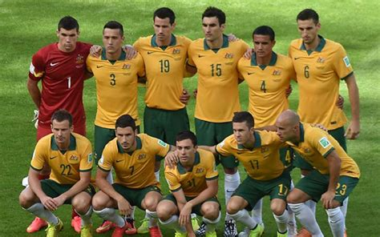

A Austrália participou de cinco Copas (1974, 2006, 2010, 2014 e 2018) e luta para ir ao Mundial pela quinta vez seguidamente.
A seleção australiana aplicou a maior goleada de que já se teve notícia no futebol internacional: uma vitória por 31 a 0 contra a Seleção da Samoa Americana. O time fazia parte da Oceania até 2005. Hoje na Confederação Asiática de Futebol (desde 2006), o time alcançou um feito sonhado por muitos colaboradores da Federação de Futebol da Austrália: se classificou para uma Copa do Mundo pela primeira vez sem a necessidade de enfrentar a repescagem.
| Data/Hora | Estádio | Adversário |
|---|---|---|
| 22 nov 2022 / 16h00 | Estádio Al Janoub | França |
| 26 nov 2022 / 07h00 | Estádio Al Janoub | Tunísia |
| 30 nov 2022 / 12h00 | Estádio Al Janoub | Camarões |